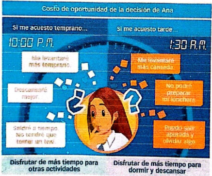

Introducción: La eeconomía como ciencia.
La economía es inherente al ser humano. Las personas tomamos decisiones económicas casi de manera permanente, pues todos los días elegimos que consumir, producir, invertir,cuánto ahorrar, dónde y en qué trabajar. Pero ¿Podemos obtener todo lo que deseamos? ¿Tenemos recursos para hacerlo?¿Qué nos impulsa a decidir? La economía trata de orientar al ser humano en sus elecciones.
Empezamos por definir la razón de ser de l a ciencia económica, esto es, la escasez, su relación con las necesidades humanas y con la elección; comprenderemos por qué se dice que la economía es una ciencia social; explicaremos su importancia al estudiar que son los bienes y el consumo y realizaremos un análisis de los procesos y actividades económicas.
Los fundamentos de la economía
Una de la preocupaciones mas importantes del ser humano esta relacionada con la solución de sus principales carencias y con el logro de mejores niveles de vida y bienestar. En este sentido, gran parte de sus conductas y decisiones están dirigidas a satisfacer sus necesidades.
La escasez y las necesidades humanas
La satisfacción de las necesidades no es siempre fácil. Las necesidades son infinitas, pues el ser humano nunca está satisfecho con lo que tiene. Sus expectativas o deseos parecen estar creciendo siempre y los recursos parecen ser siempre escasos. Por ejemplo, si un chico desea ir al cine y luego a tomar helados, pero sabe que cada una de estas actividades tiene un costo de 20 soles y él solo cuenta con el dinero para realizar una, deberá tomar una decisión.
La necesidad es la sensación de una carencia unida al deseo de satisfacerla; por ejemplo: la sed, el hambre, el frío, el afecto, etc. Las necesidades no se crean, simplemente existen porque son parte inherente del ser humano. El deso, en cambio es ligeramente distinto a la necesidad, pues es algo que las persoabas podemos impulsar voluntariamente o crear. El deseo es una necesidad que toma la forma de un producto determinado; por ejemplo, cuando se necesita calmar la sed y se desea una raspadilla.
Cuando la necesidades y deseos se transforman en intenciones de compra en los mercados de los productos o servicios que las satisfacen, surge el concepto demanda.
La economía como ciencia
Necesidades y procesos económicos
Hasta inicios del siglo XX en las ciudades peruanas la familias emparentadas solían compartir una misma vivienda con la finalidad de ayudarse mutuamente para satisfacer sus necesidades básicas. En la actualidad sin embargo el mejoramiento de la economía nacional ha incrementado el poder adquisitivo de las familias, por la que estas aspiran hoy a adquirir un espacio propio. Esta creciente demanda de viviendas ha generado la aparición de más empresas constructoras y del aulmento de la oferta inmobiliaria. A su vez, este proceso ha activado otras áreas de la economía como las que se dedican a la producción de los insumos básicos para la construcción (cemento, fierros,ladrillos,etc), y ha estiamulado la creación de más puestos de trabajo.
Así podemos observar cçomo el surgimiento de una necesidad insatisfecha ha iniciado una cadena de sucesos relacionada con la puesta en marcha de diversos ámbitos productibos y de circulación de bienes y dinero a la que se conoce como proceso económico. El estudio de este fenómeno es de interés fundamental para la economía, ciencia social que intenta establecer la relación entre las necesidades humanas y los sescasos recursos para satisfacerlas.
El sistema financiero
El sistema financiero esta conformado por un conjunto de instituciones cuya tarea principal es la de servir como intermediarios financieros. Es decir, recibir y prestar dinero a cambio de intereses.
Componentes del sistema financiero
El sistema financiero esta formado por tres componentes:
-
El mercado financiero:
Esta constituido por las personas e instituciones que demandan y ofrecen dinero u otros activos financieros como bonos y acciones. Este mercado incluye a personas naturales y empresas que poseen dinero para realizar una inversión y aquellas que demandan recursos financieros
-
Los instrumentos financieros:
Son los medios por lo que se ofrece o se recibe dinero. Los créditos bancarios, los bonos, las acciones son intrumentos financieros pero no son dineros. La diferencia está en que no tienen aceptación general y siki sib válidos para algunas transacciones. Esto significa que no podemos comprar en una tienda con un instruimento financiero a pesar de que es "dinero".
-
Las instituciones financieras
Son aquellas entidades que recaudan fondos y los canalizan hacia la actividad productiva. Estas instituciones pueden ser intermediarios financieros(bancos, cajas municipales, cooperativas de ahorro y crédito) o inversionistas institucionales(fondos de pensiones y compañías de seguros)
Elección y costo de oportunidad
La escasez nos obliga a las personas a priorizar y a tomr decisiones sobre que necesidades satisfacer primero y con qué bien o servicio hacerlo. Cada vez que decidimos satisfacer una determinada necesidad seguramente tendremos que dehar de lado o al menos postergar la satisfacción de otra becesidad. Por ejemplo, cuando dicidimos satisfacer nuestra necesidad de educación y estudiar para un examen, estamos dehjabdo de lado la posibilidad de ir al cine, estar con los amigos o salir a comer. Un ejemplo a otro nivel podrñi ser que el estado decide utilizar los recursos para construir un puerto en el norte del país en lugar de continuar la construcción y ampliación de una carretera en el sur.
Lo que dejamos de lado cuando elegimos satisfacer una determinadoa necesidad se conoce en economía como el el costo de oportunidad. Así nuestro costo de oportunidad de e studiar para el examen es no ir al cine, o en el caso del estado, el costo de oportunidad de construir el puerto es tener menos carreteras.
Por este motivo las decisiones económicas deben ser concienzudas y responsbles ya que no se trata solamente de elegir lo que queremos, pues nuestra decisiòn personal puede influir en el estado de bienestar de otras personas.
Un concepto directamente relacionado con el problema económico es el de la eficiencia. La eficiencia es el logro de resultados o la satisfacción de la mayor cantidad de recursos posibles.

Aprendemos ser ciudadanos: Responsabilida económica
Segúnn Pierino Stucchi López Raygada, "El ejercicio de la ciudadanía econónica, desde los actos de consumo, se produce con plenitud, en el marco de una economía social de mercado, cuando el escenario institucional garantiza: (I) Libertad, cuyo vehículo es la elecciçon, que permite a cada individuo determinr el cmino hci su bienestar; (II) e igualdad, cuya expresión es un mismo conjunto de derechos y deberes para cada individuo en las mismas condiciones" (Stucchi,2011,p. 57).
En un contexto de escasos recursos, es muy importante que las personas tengamos capacidad para elgir y, especialmente, podamos acceder a los bienes y servicios que nos ofrece el mercado. La igualdad y capacidd en el ejercicio de los derechos y deberes como ciudadano económico depende directamente de nuestro nivel educativo. En este serntido, la peor injusticia económica es que existan personas que no puedan acceder a una educación de calidad siendo esta la vía más importante para salir de la pobreza, par poder acceder a los bienes y servicios y paara participar en la actividad económica.